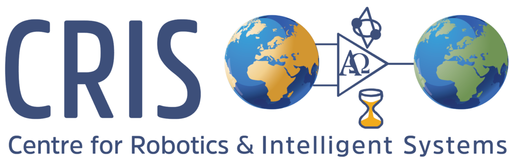
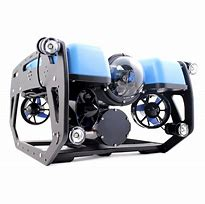
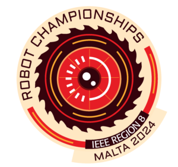
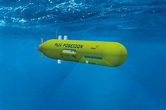
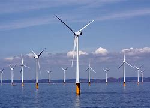
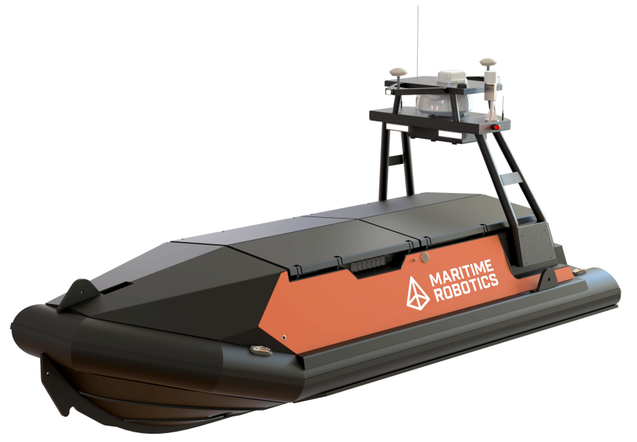

PhD Researcher | Robotics & AI | CRIS, UL
Engineering always felt like the natural path for me—fueled by a curiosity for how things work and a growing interest in robotics. When I chose Electronic and Computer Engineering (ECE) at UL, I knew I wanted to pursue robotics, especially with the opportunities offered by CRIS
During my final year, I aimed for a robotics-focused FYP at CRIS but narrowly missed out due to rankings. Refusing to let the opportunity slip, I reached out directly. Fortunately, that determination led to my current PhD supervisor offering me a project working on a BlueROV. That moment marked the start of my journey into marine robotics and set the tone for the work I continue today.
Since then, my focus has been on robotics research and teaching. My PhD explores integrating AI and automation into offshore environmental assessments—an area with significant potential to transform how we approach marine sustainability. After four intense years of research and teaching, I’ve just completed my PhD thesis. With that chapter closing, I’m hoping to push further into cutting-edge robotics projects while continuing to modernize STEM education.
| Skill/Certification | Details |
|---|---|
| Python\C | Advanced |
| Sea Survival Training Certification | Completed in advance of 10 day offshore trials in 2022 |
| Drone Pilot License | Specific Category Qualified with 500 hours piloting |
| Driving License | Clean Record since passing in 2017 |

My first deep dive into robotics with the BlueROV system, igniting my passion for robotics.Old Video Link

Led UL to victory at the IEEE Malta Robotics Competition 2024 with innovative robotic solutions. Recent Video Link

Leading a STEM education outreach initiative and spearheading UL's participation in AUV competitions. Less Recent Video Link
My PhD focuses on AI-enhanced EIA processes for offshore wind farms. This involves real-time adaptive ecological surveys to optimize data collection for sustainable marine energy projects.
My most recent publication
I plan to continue in academia, combining teaching with cutting-edge robotics research. With major ASV projects worth €2 million in the pipeline at CRIS, I look forward to leading and mentoring future robotics engineers.

This page was built only as a rough guide for the web development project, but I see potential in making it a long-term personal portfolio.
Some ideas for future improvements:
"If you make it, you make it."